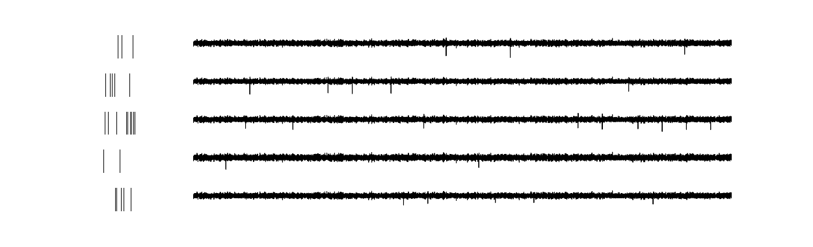
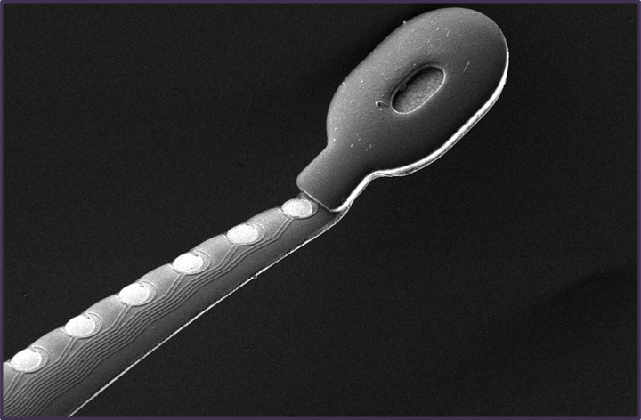

I develop flexible neural interfaces for multimodal electrophysiology in behaving nonhuman primates. My work combines microfabrication, electronics, and systems neuroscience to study cortical circuits during working memory.


I am a PhD candidate in Biomedical Engineering at Vanderbilt University and a member of the Gonzales Lab, where I develop flexible neural interfaces for stable electrophysiology and optogenetics in behaving nonhuman primates. My research brings together microfabrication, implantation strategy, and systems neuroscience to build tools for studying how cortical circuits regulate cognitive and physiological state. I am a native Tennessean and completed my undergraduate training at the University of Tennessee, Knoxville, where early work on neural activity, behavior, physiology, and biomedical materials shaped my interest in building neural technologies for complex behaving systems.
Journal Articles
-
Repeatable, low-drift recordings in behaving non-human primates
using flexible microelectrodes.
Daniel P. Woods, Grace Adams, Rana Mozumder, Wenhao Dang, Andrew Chen, Christos Constantinidis, Daniel L. Gonzales.
Preprint, 2026.
Preprint -
Trajectories of Response Inhibition Development in Adolescence
Junda Zhu, Colton R. Smith, Clément M. Garin, Daniel P. Woods, Xin Mazie Zhou, Finnegan J. Calabro, Beatriz Luna, Christos Constantinidis.
Preprint, 2026.
Preprint -
Gain modulation by mouse prefrontal cortex diminishes
fentanyl-induced respiratory depression.
Woods, D.P., Herzog, R.S., Sun, Q.W., Glovak, Z.T., Baghdoyan, H.A., Lydic, R.
Journal of Pharmacology and Experimental Therapeutics, 385, 2023.
DOI -
Biocompatibility of antifogging SiO-doped diamond-like carbon
laparoscope coatings.
Leonard, R.L., Bull, A.B., Xue, F., Haycook, C.P., Gray, S.K., Bond, C.W., Bond, P.E., McDearman, J.C., Woods, D.P., Mayfield, J., Brown, L.R., Giorgio, T.D., Johnson, J.A.
Applied Surface Science, 634, 157606, 2023.
DOI -
Social robots for older adults with dementia:
A narrative review on challenges and future directions.
Woods, D., Yuan, F., Jao, Y.L., Zhao, X.
Social Robotics, ICSR 2021.
DOI
Conference Abstracts
-
Decrease in respiratory rate caused by prefrontal cortex
administration of fentanyl can be described using a
gain modulation model.
Herzog, R.S., Woods, D.P., Sun, Q.W., Glovak, Z.T., Baghdoyan, H.A., Lydic, R.
Society for Neuroscience Annual Meeting, Washington, D.C., 2023.
Abstract